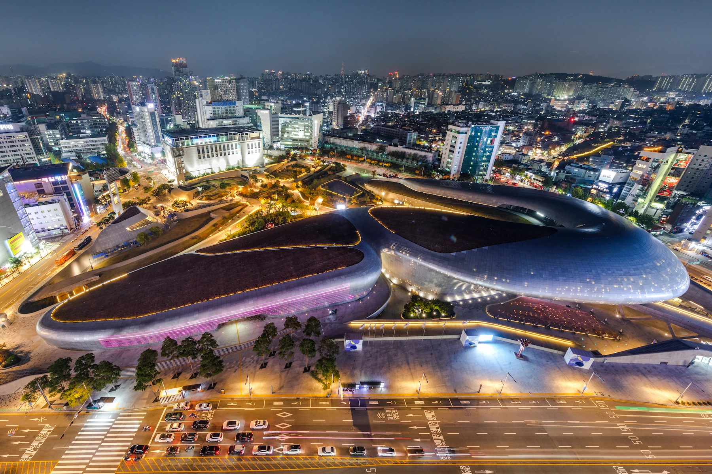
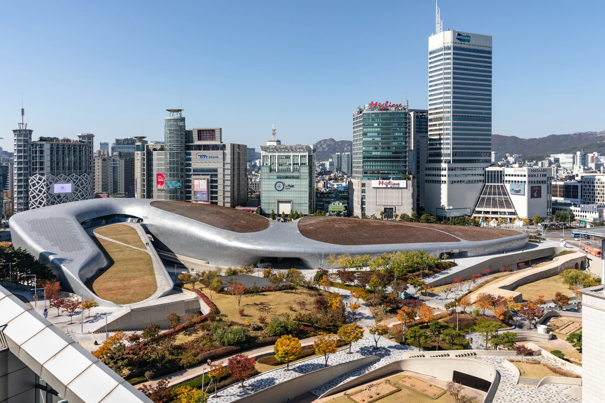
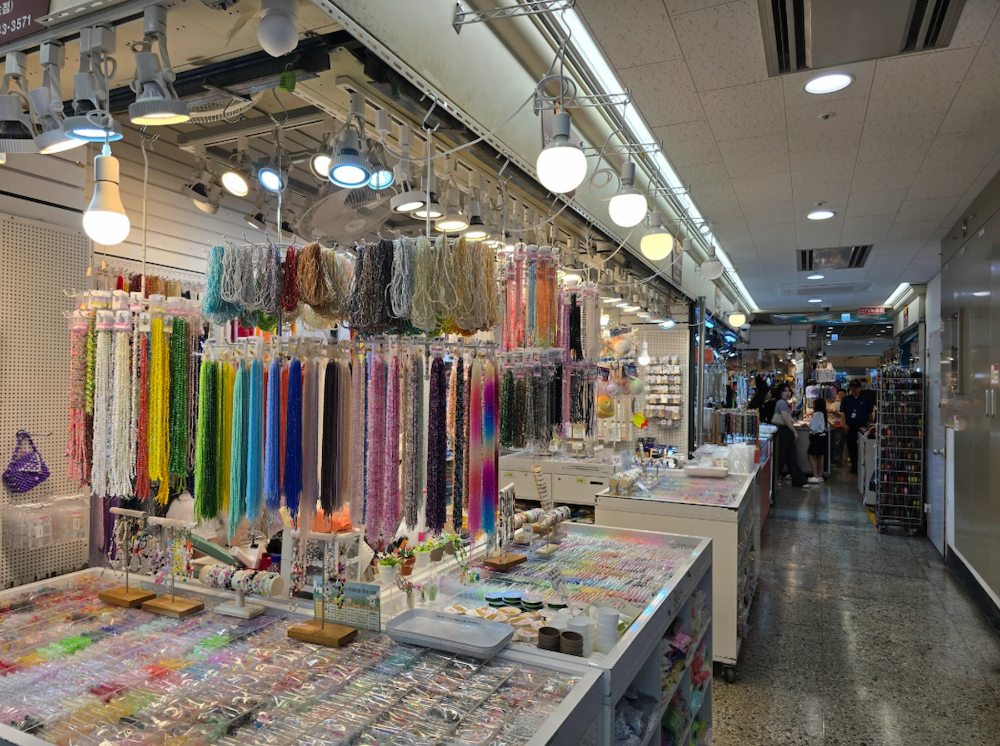
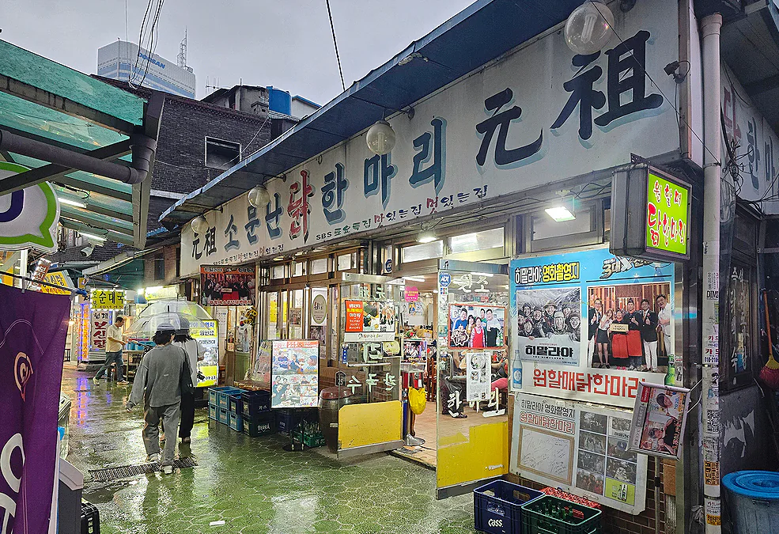
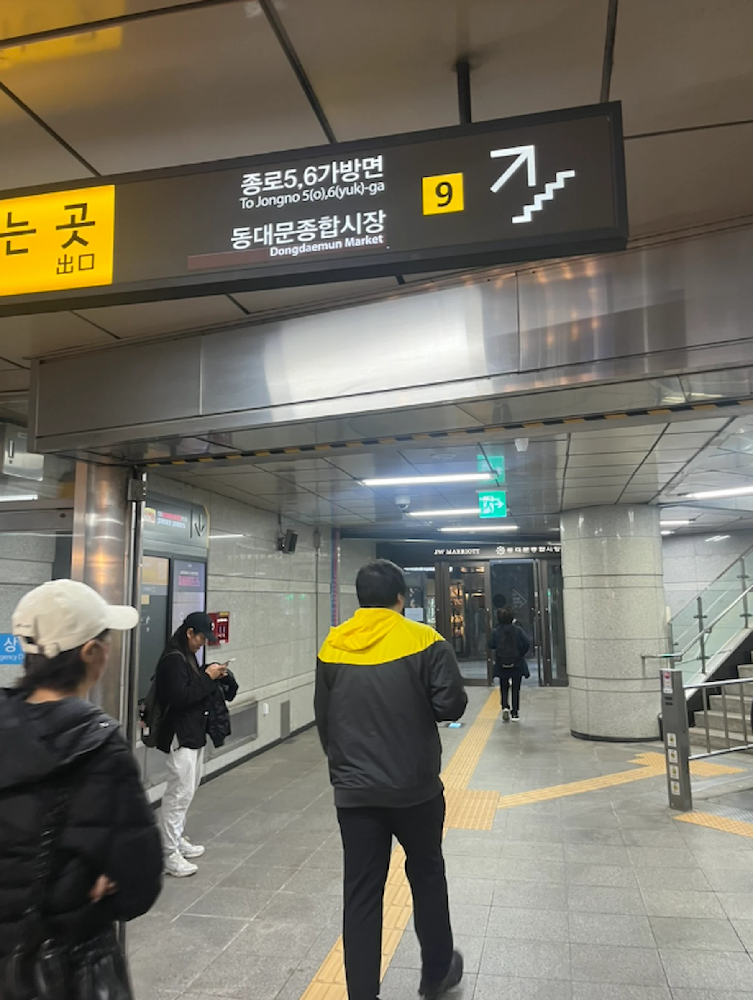

Dongdaemun Seoul Guide 2026: DDP, Markets & Night Shopping
Dongdaemun is not one market.
DDP, normal retail malls, fabric and accessory markets, late-night shopping and fashion wholesale all sit close together, but they do not work the same way or keep the same hours.
If this is your first visit and you mainly want to shop for clothes, bags or accessories, start on the DDP and retail side rather than walking straight into the wholesale district.
If you want fabric, beads, trims or other clothing materials, start closer to Dongdaemun Station and Dongdaemun Shopping Complex during the day.
And if you are coming at night, decide what kind of night you actually want. Late retail, fashion wholesale, the Yellow Tent market and DDP after dark are four different experiences.
In Dongdaemun, the right place at the wrong time can still feel like the wrong market.

Understand Dongdaemun Before You Go
The easiest way to understand Dongdaemun is to stop treating it as one shopping destination.
Think of it as several overlapping districts that become useful at different times.
The map on this page is designed around six questions:
- Do you want to see DDP?
- Do you want normal retail shopping?
- Are you looking for fabric, accessories or DIY materials?
- Do you want to shop late at night?
- Are you actually interested in the wholesale fashion district?
- Where should you stop for a proper meal?
If you answer that first, the station, route and time become much easier to choose.
First time in Dongdaemun?
Start with the retail side.
Use Dongdaemun History & Culture Park Station for DDP and the easiest general-shopping route. Move toward the specialty markets only when you know what you are looking for.
The wholesale district is not the default starting point just because you came to Dongdaemun for clothes.
PLACE + PURPOSE + TIME
Dynamic Decision Map
Choose a time, category or route before you start walking. The map uses the official NAVER Maps Web Dynamic Map service.
Loading the official NAVER map…
Preparing official map locations…
Which Dongdaemun Do You Actually Need?
DDP and architecture
Go to Dongdaemun Design Plaza when architecture, exhibitions, design events or the building at night are part of the reason you came.
DDP is not just a futuristic building to photograph. It is an active cultural complex used for exhibitions, design events, fashion shows and other rotating programs. If a current exhibition interests you, go inside. If not, the architecture and evening atmosphere can still make it a useful starting point for Dongdaemun.
DDP also works well as an orientation point because it sits directly beside Dongdaemun History & Culture Park Station and close to several easier retail options.
DDP is a landmark, not another name for Dongdaemun. Because Dongdaemun's shopping district spreads across many markets and malls, travelers often use DDP as a convenient reference point for the southern retail and night-fashion side of the area.
Do not assume that visiting DDP means you have seen “Dongdaemun Market.” The traditional and specialty-market side extends toward Dongdaemun Station, while the night-wholesale district follows a different operating rhythm.
Do not confuse DDP with DDP Fashion Mall. DDP Fashion Mall is a separate night-fashion wholesale mall and is not inside Dongdaemun Design Plaza.

Easy retail shopping
Choose the retail side when you want to buy a few items without learning the rules of wholesale buying.
Doota Mall is one of the simplest starting points for a first visit. It operates as a normal consumer mall with fashion, shoes, bags, beauty, souvenirs, food and tax-refund facilities.
Hyundai City Outlet Dongdaemun is another straightforward retail option, especially earlier in the evening because it closes before the core night-wholesale buildings.
If all you want is normal shopping, there is no requirement to enter a wholesale mall just to say you shopped in Dongdaemun.
Fabric, accessories and DIY materials
Use Dongdaemun Shopping Complex when the product itself is the reason for the visit.
This is the side of Dongdaemun for fabric, garment materials, beads, trims, accessories, wedding-related goods and other specialist supplies.
The important difference is time.
These are mainly daytime markets. The operating hours also vary by product section, so “Dongdaemun is open late” is not useful advice if the thing you want is fabric.
If you are serious about materials or customization, this can be a destination in its own right. If you only want ready-to-wear clothes, it is usually not the best first stop.
Late-night retail
Dongdaemun does still offer shopping for normal consumers late at night.
NYUNYU Dongdaemun, for example, operates into the early morning and sells clothing, bags, shoes and accessories to ordinary shoppers.
That matters because “after midnight” does not automatically mean “wholesale only.”
But the choice becomes narrower as the night gets later, so check the current hours before building the whole visit around 1:00 or 2:00 AM.
Night wholesale
The night-wholesale district is a different part of Dongdaemun.
Buildings such as DDP Fashion Mall and the apM-family wholesale malls begin operating around the evening and continue into the early morning.
This is the real fashion-trade economy: buyers, sellers and wholesale businesses working while much of Seoul is winding down.
That can be fascinating if fashion sourcing or the wholesale system is part of your interest.
It is not automatically better shopping for a normal traveler.
Single-item sales can depend on the building and seller, and some wholesale malls have closure patterns that surprise visitors — including nights when people assume the district should be busiest.
Go here with a reason, not simply because the doors are open late.
Dongdaemun Market Is Not One Market
This is the naming problem that causes much of the confusion.
“Dongdaemun Market” is often used broadly for a large commercial district containing traditional markets, specialist markets, modern malls and wholesale buildings.
Dongdaemun Shopping Complex, on the other hand, is a specific large market complex near Dongdaemun Station.
Those two meanings are not interchangeable.
If a blog tells you to “go to Dongdaemun Market,” that instruction is incomplete until you know:
- what you want to buy
- whether you need retail or wholesale
- whether the place operates during the day or at night
- which station puts you on the correct side of the district
That is why a map is more useful here than another list of ten shopping buildings.
Start at the Right Station
Dongdaemun has two practical gateways for most visitors.
Dongdaemun History & Culture Park Station
Use this side for:
- DDP
- normal retail shopping
- late-night retail
- the approach toward the night-fashion district
Lines 2, 4 and 5 meet here.
For a first visit built around DDP, shopping and dinner, this is usually the easier start.
Dongdaemun Station
Use this side for:
- Dongdaemun Shopping Complex
- fabric and clothing materials
- specialty markets
- the grilled-fish and dak-hanmari food alleys
Lines 1 and 4 meet here.
This is the better start when the market itself — rather than DDP — is the reason you came.
The stations are close, but they do different jobs
You can walk between the two sides.
The point is not that one station is always better. It is that choosing the correct one can save you from arriving at the wrong end of a very large shopping district.
First Visit? Use the Retail Side Before the Wholesale Side
For a traveler who wants to browse Korean fashion, buy a few pieces and see DDP, the most forgiving version of Dongdaemun is:
DDP → easy retail → dinner → optional night shopping
This lets you understand the district before the night wholesale economy takes over.
It also avoids a common mistake: entering a building full of clothing and assuming every seller is operating like a normal retail shop.
Wholesale Dongdaemun deserves its own visit only when you are genuinely interested in it.
If You Want Fabric, Accessories or DIY Materials
Do this during the day.
The specialty-market side begins around Dongdaemun Shopping Complex, where product sections operate on different schedules.

This is where the map becomes particularly important because even people who arrive in the correct district can struggle to identify which building or floor actually contains what they need.
If you are buying fabric, allow time to compare before moving on. If you are looking for beads, charms, trims or customization materials, check the current section hours rather than relying on the general idea that Dongdaemun stays open late.
Make the market the anchor
A practical route is:
Dongdaemun Station → Shopping Complex → lunch → DDP if you still want more
Do not reverse the day simply because DDP is the most famous landmark.
If the material market is the reason you came, deal with the daytime market first.
What “Dongdaemun Night Market” Actually Means
Search for “Dongdaemun night market” and you can find several different experiences described under the same name.
They should not be treated as one thing.
Yellow Tent / Sebit Market
There is a real nighttime street-vendor market around the Dongdaemun area, often called Sebit Market or the Yellow Tent Market.
It is also known for counterfeit goods, and local authorities continue to carry out enforcement.
You may encounter it as part of nighttime Dongdaemun, but Korea Inside does not recommend buying counterfeit products.
If what you want is a classic food-focused Asian night market, this is not a good reason to choose Dongdaemun over a place built around food.
Late-night retail
This is the useful version for many travelers.
Some normal retail stores remain open far later than conventional shopping districts. You can still buy clothing, accessories and other goods without entering the wholesale system.
This is the branch to choose if you want to shop late but are not a fashion buyer.
Fashion wholesale after dark
Around 8:00 PM, major wholesale buildings begin opening and the character of the district changes.
This is not a tourist performance. It is part of the working fashion industry.
Come if that economy is the point.
Do not stay until 3:00 or 4:00 AM simply because a guide told you Dongdaemun “never sleeps.”
DDP after dark
DDP is another separate reason to be in the area at night.
The architecture, lighting and current media/event programming can make the evening worthwhile even if you do not plan to buy anything from the wholesale markets.
Check the current DDP program for your date rather than assuming a particular light show or event is permanent.
When Should You Go to Dongdaemun?
There is no single best time.
Daytime
Best for:
- fabric
- sewing and clothing materials
- accessories and DIY supplies
- specialty markets
- DDP exhibitions
- lunch around the traditional market side
Late afternoon to evening
This is the strongest default for a first visit.
You can:
- see DDP
- use normal retail malls
- have dinner
- watch the night economy begin
- decide whether you actually want to continue shopping
For many travelers, about 4:00 PM to 10:00 PM gives the most useful mix.
After 10:00 PM
Normal retail options begin narrowing while the wholesale side becomes more active.
This can be a good window when night shopping itself is part of your plan.
After midnight
Come with a specific reason.
Late retail still exists, and the wholesale district continues operating, but the area increasingly serves people who are there to work or buy for the fashion trade.
You do not need to stay until dawn to have “done” Dongdaemun.
Retail vs Wholesale: Know Which One You Need
The simplest distinction is this:
Retail: you are buying for yourself.
Wholesale: you are buying in a trade environment built around sellers and buyers supplying other businesses.
That does not mean every wholesale seller refuses a one-item purchase.
It means you should not assume retail behavior.
A wholesale mall may have:
- minimum quantities
- seller-dependent single-item rules
- cash-heavy transactions
- a faster business pace
- different expectations about browsing
- hours designed around the fashion trade rather than tourists
For a first-time visitor who wants one jacket or a few accessories, normal retail is usually the easier place to begin.
For someone who wants to understand Korean fashion sourcing, the night wholesale side is one of the most distinctive parts of Dongdaemun.
Eat in Dongdaemun, Not Just at Gwangjang Market
Gwangjang Market is famous for food, but that does not mean Dongdaemun has nothing worth eating.
The difference is the style of the visit.
Gwangjang can be a food-market destination in itself.
Dongdaemun works better as:
market or shopping → one proper meal → continue the evening
Grilled Fish Alley
The grilled-fish alley near Dongdaemun Station is particularly useful around lunch.
This is not an “eat ten snacks” experience. It is a place to sit down for a straightforward meal after using the daytime-market side.
Lunch can be busy, and individual restaurant hours vary.
Dak Hanmari Alley
Dak hanmari is one of the easiest food anchors to connect with a Dongdaemun afternoon or evening.
The meal is built around a whole chicken cooked at the table, with noodles commonly added later.
It works particularly well after shopping because the alley stays useful later into the evening than the grilled-fish lunch pattern.
For solo travelers, check portion size before committing to a whole-chicken meal.

Do not force both
You do not need grilled fish, dak hanmari and Gwangjang Market in one outing.
Choose the meal that fits the route you are already taking.
Three Practical Dongdaemun Routes
Route 1 — First Visit: DDP, Retail and Dinner
Best for: most first-time visitors
Start at Dongdaemun History & Culture Park Station.
Go to DDP first if architecture, an exhibition or the building itself interests you.
Then use one or two easy retail stops rather than trying to “complete” every mall.
Have dinner, then decide whether the night-shopping atmosphere is worth another hour or two.
Basic flow:
DDP → retail → dinner → optional late shopping
This is the Korea Inside default.
Route 2 — Fabric, Materials and Market Food
Best for: fabric, beads, accessories, customization, DIY and specialist shopping
Start at Dongdaemun Station and use the Shopping Complex while the relevant sections are still operating.
Then choose grilled fish for lunch or dak hanmari if you want a later, heavier meal.
Continue toward DDP only if you still have the energy and interest.
Basic flow:
Shopping Complex → food alley → DDP / retail side
The market comes first because it closes first.
Route 3 — Night Fashion and Wholesale
Best for: late-night Seoul, fashion sourcing, wholesale curiosity
Start with dinner or DDP.
Move into late retail as the evening develops, then enter the wholesale district after its buildings begin opening.
Basic flow:
DDP / dinner → late retail → night wholesale
Do not assume Friday or Saturday is automatically the best night. Some major wholesale buildings have closure patterns that make parts of the core wholesale district a poor choice on those nights.
If wholesale buying matters, recheck the exact building before you go.
How Long Do You Need in Dongdaemun?
2–3 hours
Enough when:
- DDP is the main reason
- you want one retail stop
- you have one specialist shopping task
4–6 hours
This is the strongest first-visit range.
It gives you enough time for:
- DDP
- retail shopping
- one proper meal
- an early look at Dongdaemun after dark
3–4 hours for specialty shopping
A focused visit to Dongdaemun Shopping Complex plus lunch can fill this time easily.
8:00 PM to midnight
A good window when the nighttime shopping system is specifically what you want to see.
A full day
Only give Dongdaemun a full day when several parts genuinely matter to you.
A full day is excessive if you only want DDP and some casual shopping.
Do You Need a Guided Dongdaemun Tour?
Not for normal retail shopping.
The purpose of the Korea Inside map is to make the district understandable enough that a first-time traveler can handle the basic route independently.
A guide becomes more useful when you want:
- wholesale-market access and explanation
- help communicating with sellers
- fashion sourcing
- early-morning or late-night specialist shopping
- a structured introduction to several different market types
That is a much stronger reason to pay for a guide than simply walking between DDP and a retail mall.
Guided Dongdaemun option
Before booking, check the route, language, start time, whether the tour is retail or wholesale focused, and exactly what assistance is included.
If You Are Still Shopping Late: Do You Need a Break?
Dongdaemun is one of the few Seoul districts where a late-shopping plan can genuinely continue after many other neighborhoods have slowed down.
That does not mean your energy will cooperate.
If a jjimjilbang or spa is something you already wanted to experience in Korea, a Dongdaemun option can make sense after shopping.
Do not add one simply because it is nearby.
Late-night rest option
Recheck the selected date, luggage conditions, admission period and redemption rules before paying.
Who Dongdaemun Works For — and Who Can Skip It
Strong fit — fashion shoppers
Come when the shopping itself is part of the trip, especially if you want more than a normal department-store experience.
Strong fit — fabric, accessory and DIY shoppers
The specialty-market side can justify the trip by itself.
You will get more from the area when you arrive with a product in mind.
Strong fit — design and DDP visitors
DDP gives Dongdaemun a strong reason to visit even if you do not care about wholesale shopping.
Strong fit — night owls
Few Seoul shopping districts change character as dramatically after dark.
If that change interests you, Dongdaemun is worth seeing later.
Conditional — first-time Seoul visitors
Include Dongdaemun when DDP, fashion, shopping or a specialist market matters to you.
If you have only two or three days and none of those interests are strong, you can spend the time elsewhere.
Conditional — families
DDP, normal retail, toy/stationery shopping and an early meal can work well.
Deep overnight wholesale shopping usually does not need to be part of a family itinerary.
Conditional — solo travelers
The area itself is easy to explore alone once you understand the map.
Food portions and wholesale communication can require more planning.
Skip the wholesale district when you only want ordinary shopping
Being awake at midnight is not a reason to enter a wholesale mall.
If all you need is a few clothes or accessories, use the retail side and finish when you are done.
Should You Stay in Dongdaemun or Just Visit?
For most travelers, visiting is enough.
Staying becomes more useful when:
- you plan to shop late on several nights
- fashion sourcing or wholesale buying is part of the trip
- a DDP event or business schedule keeps bringing you back
- you value the transport around Dongdaemun History & Culture Park Station
- late returns matter more than being close to Seoul's traditional sightseeing core
Do not choose a hotel only because it has “Dongdaemun” in the property name.
The actual station, exit, final walk, luggage route and location relative to DDP or the markets matter more than the branding.
Still choosing your Seoul base?
See where to stay in Dongdaemun
Choose the area first, then the hotel.
Getting Around Without Losing the Plot
Dongdaemun is walkable, but the district is large enough that walking in the wrong direction wastes time quickly.
Use the map rather than treating every market name as a separate destination.

Use the subway card you already need elsewhere
Dongdaemun History & Culture Park and Dongdaemun Station are both major subway points, so a transport card is the simplest way to move in and out of the area.
Internal link direction: T-money guide
Payment can vary by shopping type
Normal malls are straightforward for card payments.
Traditional and wholesale environments can be less predictable, so do not assume the same payment experience everywhere.
If you are planning a specialist or wholesale visit, carry a backup payment method and check the seller's terms before making a large purchase.
Internal link directions: WOWPASS / foreign credit cards in Korea
Airport convenience is a stay question, not a market question
Do not choose Dongdaemun accommodation simply because an airport route looks convenient on a map.
Check the full hotel-to-airport movement, including luggage and the final walk.
Internal link direction: airport guide / accommodation guide
Practical Mistakes to Avoid
Going to “Dongdaemun Market” without deciding what you want
The name is too broad to be a useful destination by itself.
Pick the shopping type first.
Going to the correct building at the wrong time
This is one of the easiest ways to think you have arrived at the wrong market.
Check the current operating window before you leave.
Assuming weekend night is best for wholesale
Some important wholesale buildings have Friday or Saturday closures.
Always check the exact building.
Treating every clothing building as normal retail
A building full of clothing can still be wholesale-focused.
Do not assume one-piece buying works the same everywhere.
Expecting a single food-heavy night market
Dongdaemun at night is more complicated than that.
The Yellow Tent market, late retail, wholesale fashion and DDP at night are separate experiences.
Trying to visit every mall
The point is not to complete Dongdaemun.
Pick the part that matches the thing you actually want.
Staying until dawn just because the markets do
The fact that a wholesale building operates until early morning does not mean a general traveler gets more value by staying there until closing.
Before You Go
Dongdaemun changes more than many Seoul neighborhoods because operating hours, wholesale closure days, individual shops and DDP programming all matter.
Before leaving your hotel, recheck:
- the exact market or mall
- today's operating hours
- weekly closure
- DDP exhibition/event schedule if relevant
- whether your target is retail or wholesale
- whether your planned restaurant is open
- current tour or activity availability if you booked one
For a night visit, check again on the same day.
Dongdaemun FAQ
Is Dongdaemun worth visiting?
Yes when DDP, fashion shopping, fabric/material markets or late-night shopping are part of what you want from Seoul.
If none of those matter and your first trip is very short, Dongdaemun is not compulsory.
Is Dongdaemun Market one market?
No.
The name is commonly used for a broad commercial district containing multiple markets, malls, specialist areas and wholesale buildings.
Dongdaemun Shopping Complex is one specific market complex within that wider area.
Where should a first-time visitor start?
For DDP and normal shopping, start around Dongdaemun History & Culture Park Station.
For fabric, materials and specialist-market shopping, start around Dongdaemun Station and Dongdaemun Shopping Complex.
Is Dongdaemun better during the day or at night?
It depends on the purpose.
Specialty markets are mainly daytime destinations. General retail works from day into evening. Wholesale fashion becomes much more active at night.
Is there a Dongdaemun night market?
Yes, but the phrase causes confusion.
The Yellow Tent / Sebit Market is a real nighttime street-vendor market, while late-night retail, fashion wholesale and DDP after dark are separate parts of the Dongdaemun night experience.
Can tourists buy one item in Dongdaemun wholesale markets?
Sometimes, but do not assume it.
One-item purchasing can depend on the building and seller. Use normal retail when you simply want to buy for yourself without wholesale friction.
What food should I eat in Dongdaemun?
Grilled fish works well around the daytime market route, while dak hanmari is a strong lunch, dinner or later-evening meal.
Dongdaemun food is better treated as a proper meal inside the route rather than a replacement for a Gwangjang Market food crawl.
How long should I spend in Dongdaemun?
For most first visits, about 4–6 hours is enough for DDP, shopping, a meal and some evening atmosphere.
Shorter visits work when you have one specific purpose.
Do I need a guided tour?
Not for normal retail shopping.
A guide becomes more useful for wholesale sourcing, seller communication or a specialist late-night/early-morning market experience.
Is Dongdaemun good for families?
It can be.
DDP, easy retail, toy/stationery shopping and an early meal are easier family choices than deep overnight wholesale shopping.
Should I stay in Dongdaemun?
Stay when late shopping, fashion business or repeated DDP use will shape several days of the trip.
For one visit, there is usually no need to move your hotel just to be in Dongdaemun.
The Korea Inside Default
For a first visit:
Start at Dongdaemun History & Culture Park Station → see DDP → shop on the retail side → eat one proper meal → stay later only if the night-shopping side genuinely interests you.
If fabric, accessories or DIY materials are the real reason for coming, reverse the logic:
Start at Dongdaemun Station during the day → use the specialty market first → eat nearby → move toward DDP later.
And if your goal is wholesale fashion, treat it as a separate nighttime experience rather than an extension of ordinary retail shopping.
Final Recommendation
Dongdaemun is worth learning before you arrive.
The district is not difficult because there is too little information. It is difficult because too many different markets, malls and opening hours are grouped under the same name.
Do not start by saving ten stores.
Start with four decisions:
**What do you want?
Which side of Dongdaemun has it?
What time does that part actually operate?
Which route gets you there without backtracking?**
Once those are clear, Dongdaemun stops feeling like a maze and starts becoming one of Seoul's most distinctive shopping districts.